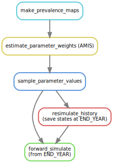

NTDMC inference pipeline¶
The NTDMC inference and simulation pipeline implements a workflow for the simulation of epidemiological models for an ensemble of geographical locations. For each location, model parameters are inferred from available epidemiological statistics (e.g. mean disease prevalence), using Adaptive Multilevel Importance Sampling (AMIS).
At a high-level, the workflow can be represented as:
The pipeline is implemented as a Snakemake workflow.